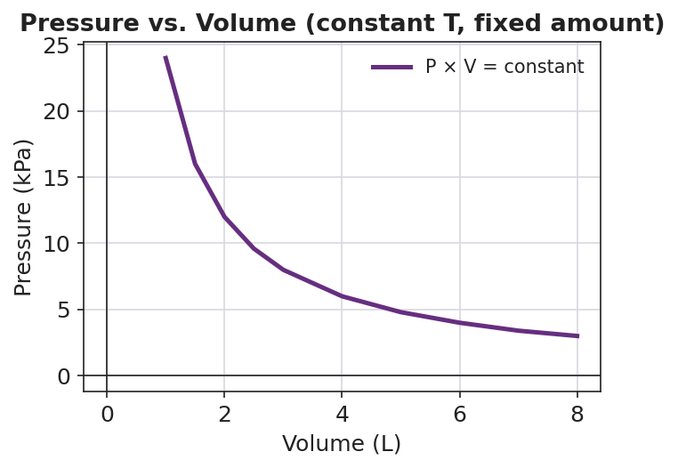

01 Phenomenon
A bunch of helium balloons is tied to a chair at a party. In the warm evening they ride high and round against the ceiling. Overnight the heat shuts off and the room turns cold. In the morning the same balloons are smaller, wrinkled, and sinking toward the floor. Nobody untied them and the room is sealed — but by morning they have shrunk and sunk.
02 Driving question
Under what conditions does a fixed amount of gas behave in a simple, predictable way — and when does that simple picture start to break down?
03 Notice & wonder
| I notice… | I wonder… |
|---|---|
Turn & Talk #1: In both the balloons and your teacher’s crushing-can demo, nothing was added or removed — the only change was that the gas got colder. In one sentence, what is happening to the particles inside the gas as it cools?
04 Initial model
Before your teacher explains anything, draw the gas particles inside one warm balloon and the same gas inside the same balloon after it has cooled overnight.
| Warm balloon (evening) | Cooled balloon (morning) |
|---|---|
In your drawings, show: how fast the particles move (use arrows), how spread out they are, and how often they hit the walls.
Prediction: Why is the cooled balloon smaller? (Write one sentence.)
05 Investigate
Part 1 — ACTIVE LEARNING: Predict, observe, explain
Activity A — Crushing can (teacher demo). Before your teacher flips the can, commit a prediction in writing.
My prediction: Will the can change? How? Why?
What actually happened:
Was my prediction right? ▢ Yes ▢ No ▢ Partly. What surprised me: _______________________________________________
Activity B — Inverted graduated cylinder (you do this). Trap a gas sample under an inverted cylinder by water displacement. Predict the volume direction before you change the temperature, then measure.
- My prediction: When I cool the trapped gas, the volume will get ▢ bigger ▢ smaller ▢ stay the same, because _______________________________________________
| Condition | Trapped volume (mL) | What the particles are doing |
|---|---|---|
| Warm (hand / room) | ||
| Cold (ice bath) |
Part 2 — Reading the pressure–volume relationship
Look at figures/pressure_volume_curve.png:

As the volume increases, the pressure _______________ (increases / decreases).
Pick any two points on the curve and multiply pressure × volume for each. What do you notice about the two products?
- Why would squeezing a fixed amount of gas into a smaller volume raise its pressure? (Think about the particles and the walls.)
06 Make it make sense
For each situation below, decide whether the gas is behaving more like or less like an ideal gas, and explain in terms of the particles. (Reminder: a gas is most ideal at low pressure and high temperature.)
A weather balloon drifts high in the warm upper atmosphere where the surrounding pressure is very low.
- More like / less like an ideal gas: _______________________________________________
- Why, in terms of the particles? _______________________________________________
A scuba diver’s gas is squeezed into a tank at very high pressure at room temperature.
- More like / less like an ideal gas: _______________________________________________
- Why, in terms of the particles? _______________________________________________
A sample of carbon dioxide is cooled to a very low temperature inside a sealed container.
- More like / less like an ideal gas: _______________________________________________
- Why, in terms of the particles? _______________________________________________
07 Key vocabulary
- ideal gas
- a *model* of a gas whose particles are treated as point-sized (negligible volume), exert no attractive forces on one another, and collide perfectly elastically; no real gas is perfectly ideal, but the model accurately predicts gas behavior at low pressure and high temperature
- real gas
- an actual gas (such as helium, oxygen, or nitrogen) whose particles have real volume and weak attractive forces; a real gas behaves most like an ideal gas at low pressure and high temperature, and deviates from ideal behavior at high pressure and low temperature
- model
- a deliberately simplified representation of a system, judged by where its predictions match reality and where they fail; the ideal gas is a model that holds under some conditions (low pressure, high temperature) and breaks down under others (high pressure, low temperature)
Use each term in a sentence about today’s phenomenon or investigation. Do not just copy the definition — use the word to describe something you observed or did.
ideal gas: _______________________________________________ _______________________________________________
real gas: _______________________________________________ _______________________________________________
model: _______________________________________________ _______________________________________________
08 Revise your model
Return to your Initial Model (the warm-vs-cooled balloon drawings).
Add a label noting that you were assuming an ideal gas. Write the assumption you were making about the particles: _______________________________________________
Add a note: under what extreme condition would that assumption start to fail for the helium? _______________________________________________
Then finish this Because / But / So sentence:
The overnight helium balloons shrink and sink as the room cools because __________________________________________, but __________________________________________, so __________________________________________.
09 Exit ticket
Two sealed steel tanks hold the same amount of nitrogen gas. Tank X is at high temperature and low pressure (particles spread far apart). Tank Y is at low temperature and high pressure (particles crowded close together).
- In which tank does the nitrogen behave most like an ideal gas? Explain your choice in terms of the particles.
Tank _____ — because: _______________________________________________ _______________________________________________
- Name the three assumptions the ideal gas model makes about gas particles.
- In one sentence, use the word model to explain why the ideal gas is useful even though no real gas is perfectly ideal.
10 Explore further
- Crushing-can demo (teacher-led, ACTIVE LEARNING anchor): Heat a small amount of water in an empty soda can until steam pushes the air out, then invert the can quickly into a tray of cold water. The can collapses with a loud crunch. The steam condenses and the trapped gas cools, the inside pressure drops far below the outside atmospheric pressure, and the air outside crushes the can. This is the *cooling → pressure drop → volume collapse* chain made loud and visible — the same chain that quietly deflates the overnight balloons. Safety: tongs/heat gloves, eye protection, keep faces back; the can is hot and the collapse is sudden.
- Inverted-graduated-cylinder gas collection (student, hands-on): Collect a gas sample by water displacement under an inverted graduated cylinder, then warm or cool the trapped sample (warm hand vs. ice-water bath around the cylinder) and watch the trapped volume change. Students record the trapped volume at two temperatures and describe, qualitatively, how warming and cooling change the volume of a fixed amount of gas. No external URL is required; for a digital companion, a Javalab "gas particles in a box" simulation lets students drag temperature and volume sliders and watch particle speed and collision frequency respond, reinforcing the particle model behind the `figures/real_vs_ideal_particles.png` diagram.